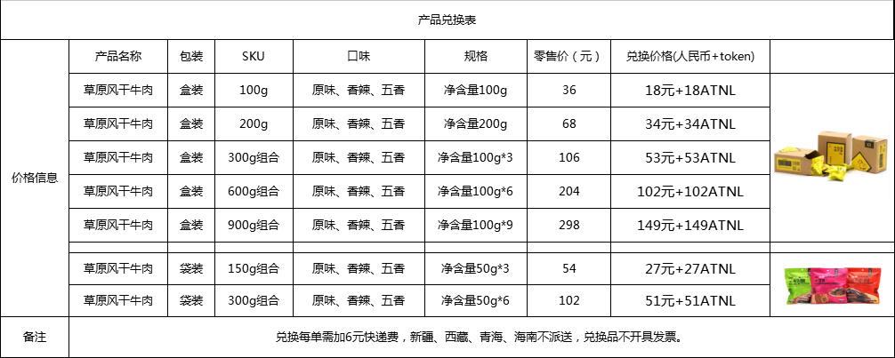

ATNL使用细则
⦁ ATNL分为两种类型，一种为官方免费送的奖励，此类型的ATNL将会被锁定，每个月的15日解锁200枚。另一种为用户购羊或购买其它服务获得的ATNL, 此类型的ATNL不会被锁定。⦁ 如何查看、提取ATNL积分星：
登录wx.atunala.com/reg/login.html，用你登记过的手机号 +密码 登录你的账号，可以查看 我的钱包，里面会显示你获得的ATNL数量。 如果你要提取ATNL到你的电子钱包，你可以在该网页发出申请，提供你的imtoken的收款地址， 我们的客服会在24-48小时内处理。如果你不知道如何使用imtoken钱包，请加我们的客服微信二维码，获得帮助。

⦁ 如何兑换我们的产品和服务：官方接受用户以人民币和ATNL积分星结合的方式兑换官方的以下产品（会不断增加产品和服务品类）。人民币和ATNL各一半。官方认可在兑换商品的时候，1ATNL相当于1元。
特别说明：因为官方运营需要，支付牧民及其它供应链合作伙伴均需要人民币支付，所以销售产品采用一半以人民币支付的原则。同时，有效防止恶意刷免费ATNL的行为，维持生态的健康运营，共赢互惠。 